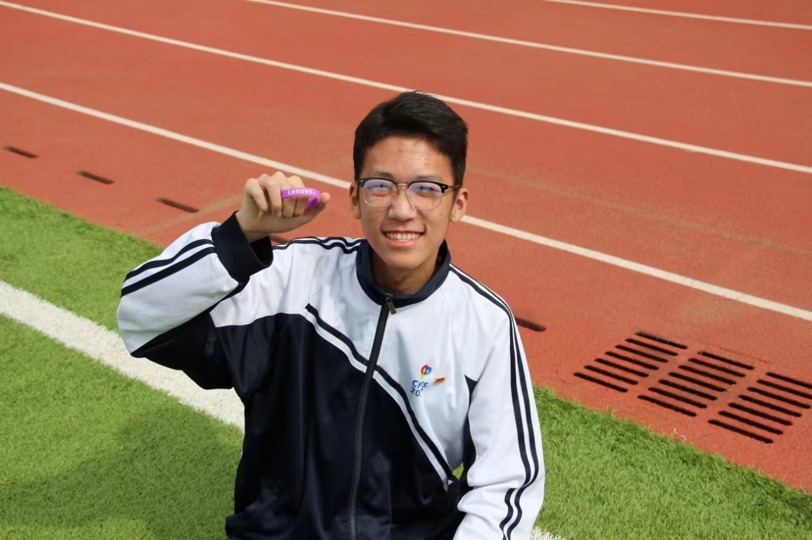

关于我

姓名:赵泓坤
性别:男
爱好:听歌 写代码 踢足球
性格 :开朗
家乡:北京
职业:大数据专业学生
个人简介
我叫赵泓坤，是一名大数据专业的中职学生。回想起大一的那一年，我满怀憧憬和热情地开始了我的学习之旅。 在中职学校的第一年，我全身心地投入到学习大数据技术中。我积极参加各种实践课程和项目，与同学们一起探索大数据的魅力。
我努力学习，从基础的数据分析到高级的数据处理，我一步步地掌握了各种技能。我参加了学校的比赛和项目，锻炼了自己在实际场景中应用大数据技术的能力。 一年的学习经历使我成长了许多。我对大数据的兴趣更加浓厚，也更加自信地面对未来的挑战。我期待着继续学习和进步，让自己成为一名优秀的大数据技术人才。